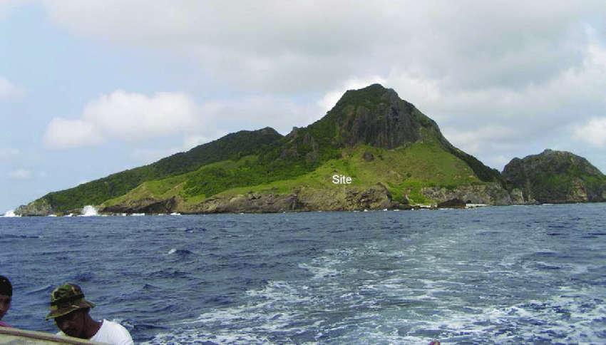
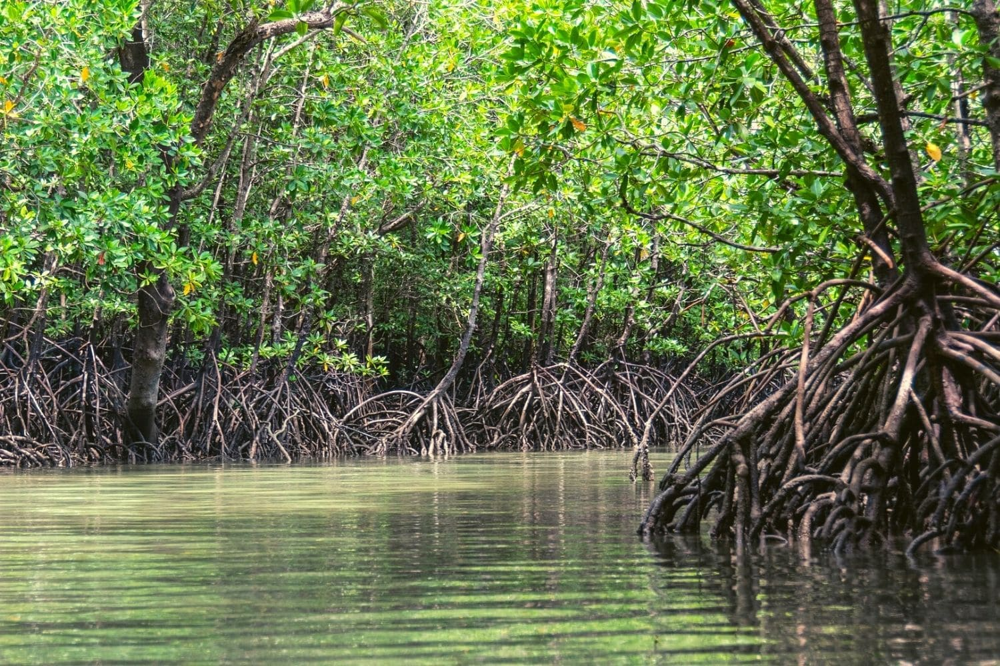
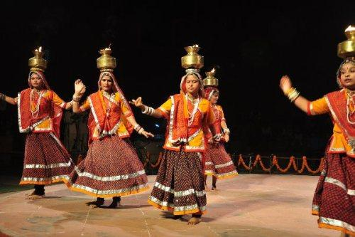

Siayan Island is known for its pristine beaches and clear waters. It's an ideal spot for swimming, snorkeling, and diving. The island offers beautiful coral reefs and marine life, making it a haven for underwater enthusiasts.
This marine park is a protected area consisting of seven islets. It's another excellent spot for snorkeling and diving, offering diverse marine life and vibrant coral reefs.
Siayan Peak offers panoramic views of the surrounding landscapes. It's a great spot for hiking and trekking, allowing visitors to immerse themselves in the beauty of nature while enjoying breathtaking vistas from the top.
The mangrove forest in Siayan is an important ecosystem that serves as a habitat for various species of plants and animals. Visitors can explore the mangroves through boat tours or kayaking, offering an opportunity to observe the unique biodiversity of the area.
Visitors to Siayan can also immerse themselves in the local culture by participating in traditional activities, such as attending festivals, trying local cuisine, or interacting with the friendly locals.